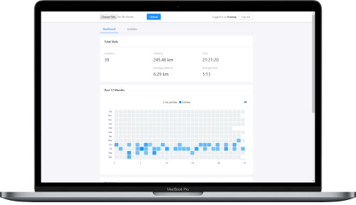

My projects.

I'm Napping
Android auto-reply SMS app for those people who nap way too much (you know who you are).
View on GitHub
Android auto-reply SMS app for those people who nap way too much (you know who you are).
View on GitHub